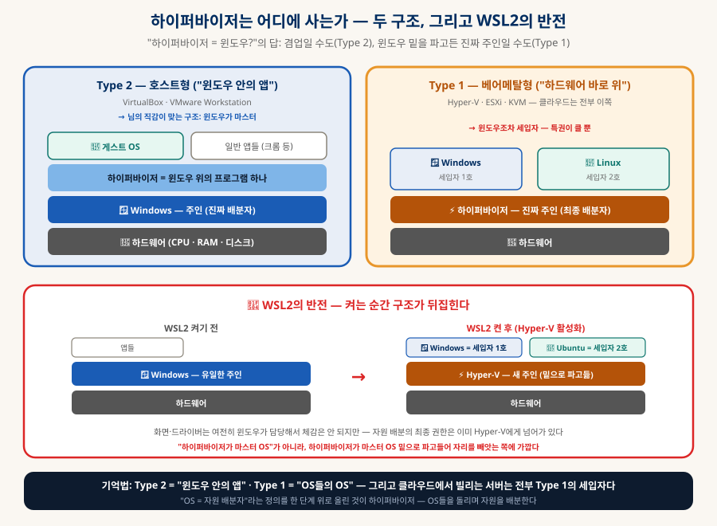
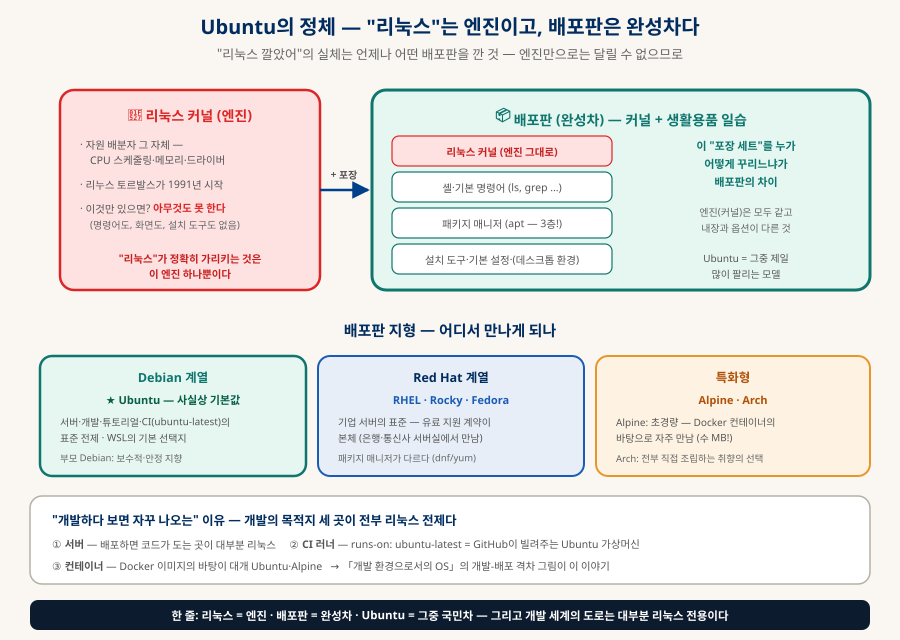
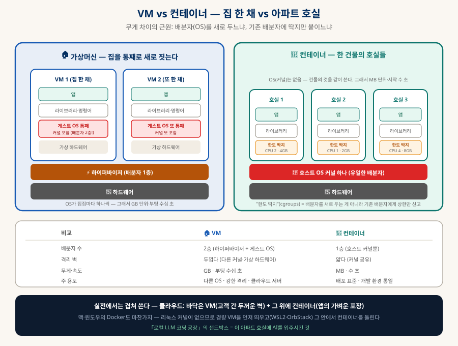
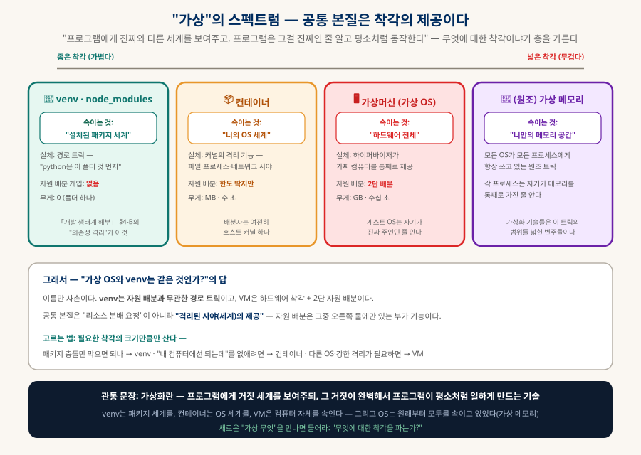

가상화의 세계
WSL · Ubuntu · 가상 OS — 착각을 파는 기술
OS의 본업이 자원 배분이라면, 가상화는 그 정의를 재귀적으로 한 번 더 적용한 것이다 — OS들을 돌리며 자원을 배분하는 OS. 컴퓨터 안의 가짜 컴퓨터(VM)부터 윈도우 밑을 파고드는 하이퍼바이저의 반전, Ubuntu가 국민차인 이유, 그리고 venv와는 왜 다른지까지 — 전부 그림으로 푼다.
0. 한눈에 보기 — 네 개의 답
대화에서 나온 질문 넷에 대한 압축 답변 — 상세는 각 절에서
| 질문 | 답 (한 줄) |
|---|---|
| "가상 OS가 뭐야?" | 하이퍼바이저가 만든 가짜 컴퓨터 위에서, 자기가 진짜인 줄 알고 도는 OS (§2) |
| "리소스를 미리 할당해주는 거야?" | 대부분 아니다 — CPU는 시분할, 메모리는 설정에 따라, 디스크는 쓴 만큼 성장 (§3) |
| "하이퍼바이저 = 마스터 OS(윈도우)?" | 겸업(Type 2)일 수도, 윈도우 밑을 파고든 진짜 주인(Type 1 — WSL2가 이쪽)일 수도 (§4) |
| "가상 OS = 파이썬 가상환경?" | 아니다 — venv는 자원과 무관한 경로 트릭. 공통 본질은 "분배 요청"이 아니라 착각의 제공 (§8) |
1. 출발점 — "OS는 자원 배분자"라는 정확한 직감
이 정의 하나면 가상화 전체가 풀린다
OS의 본업은 자원 배분이다 — 수십 개의 프로그램이 동시에 "CPU 달라, 메모리 달라"고 아우성치는 것을, OS가 CPU 시간을 잘게 쪼개 돌아가며 나눠주고(스케줄링), 메모리를 구획해 배정하고, 디스크·네트워크 접근을 줄 세운다. 프로그램들은 서로의 존재를 거의 모른 채 각자 컴퓨터를 독차지한 기분으로 돈다.
그런데 이 문장을 다시 읽어보자 — "각자 컴퓨터를 독차지한 기분으로". 즉 평범한 OS도 이미 모든 프로그램에게 착각을 제공하고 있다. 가상화는 새로운 마법이 아니라, 이 착각의 범위를 넓힌 것이다: "프로세스 하나"에게 주던 착각을 "OS 통째"에게 주면 — 그게 가상머신이다.
2. 가상머신 — 컴퓨터 안의 가짜 컴퓨터
게스트 OS는 별도의 리소스를 "소유"하는 게 아니라, 배분받은 몫을 자기 것인 줄 알고 다시 배분한다
가상머신(VM)은 한 대의 진짜 컴퓨터(호스트) 안에 소프트웨어로 세운 가짜 컴퓨터이고, 그 위에 설치된 OS(게스트)가 흔히 말하는 "가상 OS"다. 게스트 입장에서는 CPU·메모리·디스크가 다 보이므로 자기가 진짜 컴퓨터에 깔린 줄 안다 — 실제로는 하이퍼바이저가 진짜 하드웨어를 쪼개 나눠주고 있다. 쓰는 이유는 셋: 다른 OS가 필요해서(윈도우 안의 리눅스), 격리가 필요해서(안에서 뭘 망가뜨려도 밖은 무사 — 「로컬 LLM 코딩 공장」의 샌드박스), 한 대를 쪼개 팔려고(클라우드 — 「SaaS 해부」 사다리의 IaaS층 상품이 바로 VM이다).
2-1. 2단 배분 — 요청 하나가 두 관문을 지난다 (동적)
핵심 구조를 눈으로 보자. Ubuntu 안의 앱이 "메모리 줘"라고 요청하면, 그 요청은 배분자 두 명을 차례로 지난다:
3. 리소스는 미리 떼어주나 — 자원마다 다르다
"미리 할당"은 기본값이 아니라 선택지다
| 자원 | 방식 | 실제 동작 |
|---|---|---|
| CPU | ❌ 고정 아님 — 시분할 | "vCPU 8개"는 코어 8개를 떼어놓는 게 아니라 진짜 코어들의 시간을 쪼개 받는 티켓이다. 게스트가 놀면 그 시간은 호스트가 그냥 쓴다 — 물리 코어보다 많은 vCPU를 파는 것(초과 판매)도 가능하고, 클라우드가 이 원리로 돌아간다 |
| 메모리 | ⚠️ 설정에 따라 둘 다 | 고전 VM(VirtualBox류)은 부팅 때 통째로 예약이 기본. WSL2·현대 하이퍼바이저는 동적 — 쓰는 만큼 가져가고 안 쓰면 반납한다 |
| 디스크 | 대개 성장형 | 게스트에게 "256GB 디스크"를 보여주지만 실체는 호스트의 파일 하나 — 실제로 쓴 만큼만 자란다 (thin provisioning) |
3-1. CPU 시분할을 눈으로 — 코어 하나의 1초 (동적)
4. 하이퍼바이저는 어디에 사나 — 그리고 WSL2의 반전
"하이퍼바이저 = 윈도우?"의 답은 구조에 따라 갈린다

5. Ubuntu — "리눅스"는 엔진이고, 배포판은 완성차다
"리눅스 깔았어"의 실체는 언제나 어떤 배포판을 깐 것

엄밀히 "리눅스"는 커널(자원 배분자 그 자체)만을 가리키고, 커널만으로는 명령어 하나 칠 수 없다. 커널 + 기본 명령어 + 패키지 매니저(apt — 「개발 생태계 해부」의 3층!) + 설치 도구를 한 세트로 포장한 것이 배포판이고, Ubuntu는 그중 가장 대중적인 것이다 — 서버·튜토리얼·CI(ubuntu-latest)· WSL 기본 선택지까지, 사실상 "리눅스의 기본값" 역할을 한다. 개발하다 보면 자꾸 등장하는 이유는 단순하다: 개발의 목적지 세 곳(서버·CI 러너·컨테이너)이 전부 리눅스 전제이기 때문이다.
6. WSL — 윈도우에 리눅스를 들이는 공식 통로
"WSL 깔고 Ubuntu 올려서"가 한 덩어리로 다니는 이유
WSL(Windows Subsystem for Linux)은 윈도우 안에서 진짜 리눅스를 돌리는 마이크로소프트 공식 기능이다. 두 용어가 세트로 다니는 이유 — WSL을 켜고 "어떤 리눅스를 설치할까?"에서 기본 선택지가 Ubuntu이기 때문이다. 왜 필요한지는 「개발 환경으로서의 OS」의 핵심 논지 그대로다:
문제 — 개발 세계는 유닉스 전제
도구·서버·문서·스크립트가 유닉스 계열 전제로 만들어져 있어, 순정 윈도우에서는 명령어·경로가 자꾸 어긋난다. 맥은 애초에 유닉스 혈통이라 이 문제가 없다.
해법 — 경량 VM 속 진짜 커널
WSL2는 Hyper-V 경량 VM에서 진짜 리눅스 커널을 돌린다(§4의 그 반전). 흉내가 아니라 진짜라서 Docker·서버 도구가 그대로 돈다.
체감 — 이중 구조의 일상
파일은 윈도우에, 터미널·개발 도구는 리눅스에서 도는 이중 구조. VS Code가 WSL 안으로 자연스럽게 접속해 경계가 거의 안 느껴진다.
7. VM vs 컨테이너 — 집 한 채 vs 아파트 호실
무게 차이의 근원: 배분자를 새로 두느냐, 딱지만 붙이느냐

§2의 언어로 정리하면 — 컨테이너에는 두 번째 배분자가 없다. 호스트 커널이 직접 그 프로세스들을 관리하고, "이 컨테이너는 CPU 2개·4GB까지"라는 한도 딱지(cgroups)만 붙인다. OS를 새로 안 깔기 때문에 MB 단위·수 초로 가볍고, 대가는 격리 벽이 VM보다 얇다는 것. 그래서 실전에서는 겹쳐 쓴다 — 클라우드는 바닥에 VM(고객 간 두꺼운 벽), 그 위에 컨테이너(앱의 가벼운 포장). 맥·윈도우의 Docker도 리눅스 커널이 없으므로 경량 VM을 먼저 띄우고(WSL2·OrbStack) 그 안에서 컨테이너를 돌린다.
8. "가상"의 스펙트럼 — venv와는 왜 다른가
공통 본질은 "리소스 분배 요청"이 아니라 착각의 제공이다

| 파이썬 venv | 컨테이너 | 가상머신 | |
|---|---|---|---|
| 속이는 것 | "설치된 패키지 세계" | "너의 OS 세계" | "하드웨어 전체" |
| 실체 | 경로 트릭 — 환경 변수 몇 개 | 커널의 격리 기능 | 가짜 컴퓨터 통째 |
| 자원 배분 개입 | ❌ 전혀 없음 | 🔶 한도 딱지만 | ✅ 2단 배분 |
| 무게 | 0 (폴더 하나) | MB · 수 초 | GB · 수십 초 |
8-1. 그래서 언제 VM을 켜나 — 실전 시나리오 8 + 아닌 경우 5
"다른 OS·강한 격리"라는 기준을 실제 상황으로 풀면 이렇다. VM이 정답인 여덟 장면:
| 상황 | 왜 VM인가 | 도구 |
|---|---|---|
| ① 윈도우에서 리눅스 개발 | 개발의 목적지(서버·CI·컨테이너)가 리눅스 전제(§5) — 진짜 커널이 필요하다 | WSL2 — 이 문서의 주인공. 사실상 자동 선택 |
| ② 맥에서 윈도우 전용 프로그램 | 은행·관공서 프로그램, 윈도우 전용 업무 SW처럼 대체재가 없는 경우 | Parallels·UTM — 단 이 용도는 "필요악"에 가깝다 |
| ③ 수상한 것을 열어봐야 할 때 | 의심스러운 첨부파일·출처 불명 프로그램 — 가짜 컴퓨터에서 열면 망가져도 그 안이다. 끝나면 통째로 삭제 | 격리 전용 VM (네트워크까지 끊으면 더 안전) |
| ④ 부수기 전제의 실험 | OS 설정·레지스트리·새 도구를 마구 만져보는 실험 — 스냅샷을 찍어두고, 깨지면 그 시점으로 복원 | VM의 스냅샷 기능 — 물리 컴퓨터엔 없는 "되감기 버튼" |
| ⑤ 레거시 소프트웨어 | 옛 OS에서만 도는 프로그램(구형 장비 제어 SW 등) — 그 시절 OS를 VM에 박제 | 해당 구버전 OS의 VM |
| ⑥ 내 앱의 호환성 시험 | 여러 OS·여러 버전에서 내 프로그램이 도는지 확인 — 컴퓨터를 그만큼 살 수는 없으니 | OS별 VM 여러 개 (또는 클라우드 테스트 서비스) |
| ⑦ 서버가 필요할 때 | 클라우드에서 서버를 "빌린다" = VM을 빌린다(§2) — 내가 켜는 게 아니라 이미 쓰고 있는 경우 | EC2류 · ubuntu-latest |
| ⑧ AI 에이전트 샌드박스 | 자율 루프가 파일 삭제·설치를 마음껏 해도 되는 우리 — 컨테이너로 부족하면(호스트 조작 위험) VM 격리로 | 「로컬 LLM 코딩 공장」 §3의 그 설계 |
반대로 VM이 과하거나 틀린 다섯 장면 — "가상 OS 쓰는 게 좋은가?"의 답이 "아니오"인 경우가 실은 더 많다:
| 상황 | 더 나은 답 |
|---|---|
| 파이썬 패키지 버전이 충돌한다 | venv — 착각 한 층이면 되는데 컴퓨터 통째는 낭비다(§8) |
| "내 컴퓨터에선 되는데"를 없애고 싶다 | 컨테이너 — 배포 환경 통일이 목적이면 아파트 호실로 충분 |
| 게임·3D·GPU 성능이 핵심이다 | VM은 GPU 전달이 어렵고 손실도 있다 — 네이티브 부팅(듀얼부팅)이나 그냥 그 OS의 컴퓨터 |
| 맥에서 iOS 앱을 빌드하려고 맥 VM을? | 방향이 반대다 — iOS 빌드에 필요한 건 진짜 맥(「애플 앱 개발의 지도」의 "맥 필수"). 맥OS의 VM 구동은 라이선스·성능 제약이 커서 실용적이지 않다 |
| 그냥 리눅스를 배우고 싶다 (맥 사용자) | 맥 터미널이 이미 유닉스다 — 명령어 학습엔 VM이 불필요하고, 리눅스 특유의 것(apt·systemd)이 궁금할 때만 가볍게 컨테이너나 VM |
9. 이미 만난 가상화 지도
이 지식 베이스에서 마주친 것들의 정체를 한 표로
| 만난 곳 | 정체 | 메모 |
|---|---|---|
| WSL2 | 경량 VM (Type 1) | 윈도우 안의 진짜 리눅스 커널 — 켜는 순간 윈도우도 세입자(§4) |
| Docker · OrbStack (맥) | 경량 VM + 컨테이너 | 맥엔 리눅스 커널이 없어 VM을 먼저 띄우고 그 안에서 컨테이너 — OrbStack이 빠른 이유가 이 VM 층 최적화(「로컬 LLM 코딩 공장」) |
| runs-on: ubuntu-latest | 일회용 VM | GitHub이 매번 새로 띄워주는 Ubuntu 가상머신 (「CI/CD 정리」) |
| 클라우드 서버 (EC2 등) | VM 대여 | 물리 서버를 하이퍼바이저로 쪼갠 것 — 「SaaS 해부」 IaaS층의 상품 |
| Android Emulator | VM에 가까움 | 안드로이드 OS를 통째로 돌린다 — 그래서 무겁다 |
| iOS 시뮬레이터 | ⚠️ VM 아님 | iOS를 통째 돌리는 게 아니라 iOS API를 맥에서 흉내 — 「애플 앱 개발의 지도」에서 "2층 유사"라고 한 이유이자, 에뮬레이터보다 빠른 이유 |
| venv · node_modules | 가상화 아님 (경로 격리) | §8 — 자원과 무관, 이름만 사촌 (「개발 생태계 해부」 §4-B) |
10. 함께 읽기
이 문서에서 갈라지는 길들
| 주제 | 문서 |
|---|---|
| 왜 개발 환경으로 유닉스인가 — WSL의 배경 | 「개발 환경으로서의 OS」 — 이 문서의 모(母) 문서 |
| venv·node_modules의 원래 맥락 | 「개발 생태계 해부」 §4-B (의존성 격리) |
| 컨테이너 샌드박스의 실전 사용 | 「로컬 LLM 코딩 공장」 §3 — AI를 아파트 호실에 입주시키기 |
| 클라우드 = VM 대여라는 사업 | 「SaaS 해부」 §1 — 책임의 사다리 (IaaS층) |
| ubuntu-latest가 나온 곳 | 「CI/CD 정리」 §7 |
| iOS 시뮬레이터가 VM이 아닌 이유 | 「애플 앱 개발의 지도」 §1 |